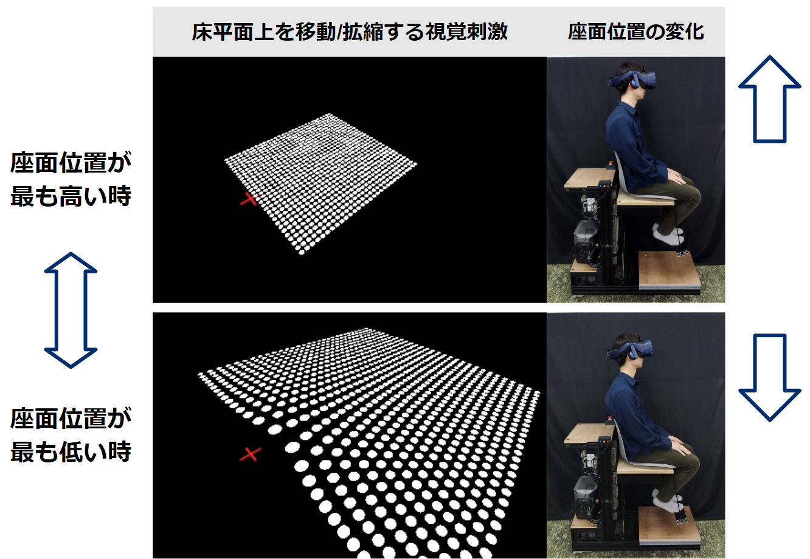
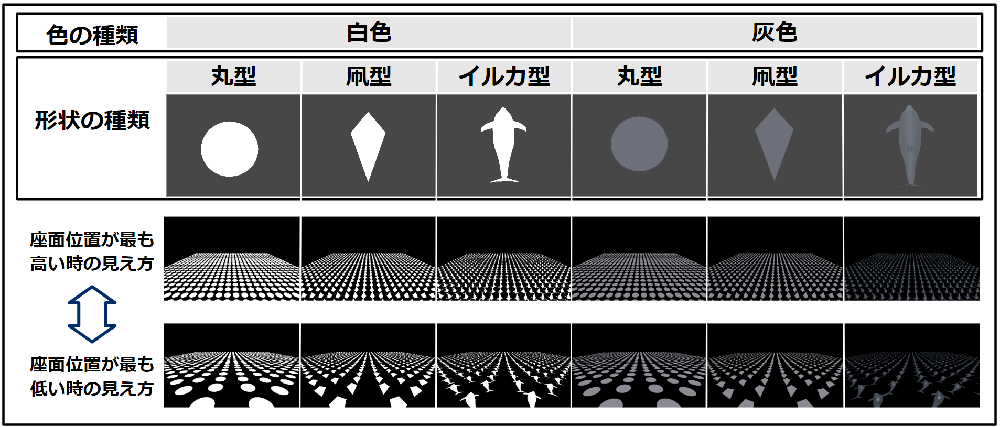
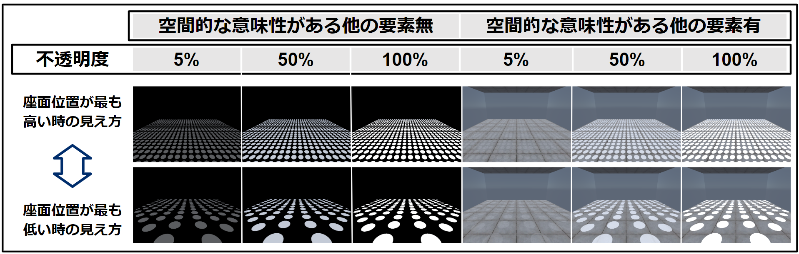

拡縮・移動するテクスチャ勾配刺激をに表示し，垂直方向に上下する装置と同時に制御することで、実際の物理空間の移動量をより大きな動きに感じさせるVR（MR）モーションライド。
  
With the increasing popularity of VR motion rides, technologies for enhancing vection to improve immersion are gaining attention. In Mixed Reality (MR) motion rides, expected to become more widespread, the visibility of the real world presents a challenge in moving all the coordinates of visual stimuli to generate vection. To address this, we focused on texture gradients, which can convey a three-dimensional sense using two-dimensional visual stimuli. By placing texture gradient visual stimuli on the floor, we developed a technique to amplify the perceived intensity of vertical acceleration without obstructing the view of virtual objects in the MR space. This study conducted two experiments to investigate the design flexibility for placing these texture gradient visual stimuli in MR spaces. Experiment 1 examined the impact of the semantic meaning of the shapes composing the texture gradients on the perceived vertical movement distance. Experiment 2 assessed the influence of a VR space simulating an actual MR environment and the opacity of the stimuli on the perceived vertical movement distance. The results suggest that the proposed texture gradient visual stimuli can be effectively placed in MR spaces with relatively high flexibility in shape and opacity.
このテクスチャ勾配刺激は床面のみに配置しており，それ以外の風景を妨げることなく，垂直方向の移動距離を増幅させられる効果がある．そのため，MRモーションライドに応用することができると考えている．遊園地アトラクションの場合は回転木馬などが相当し，上下移動を十分に感じながらも物理空間にいる人に手を振れるような利用シーンを想定している．